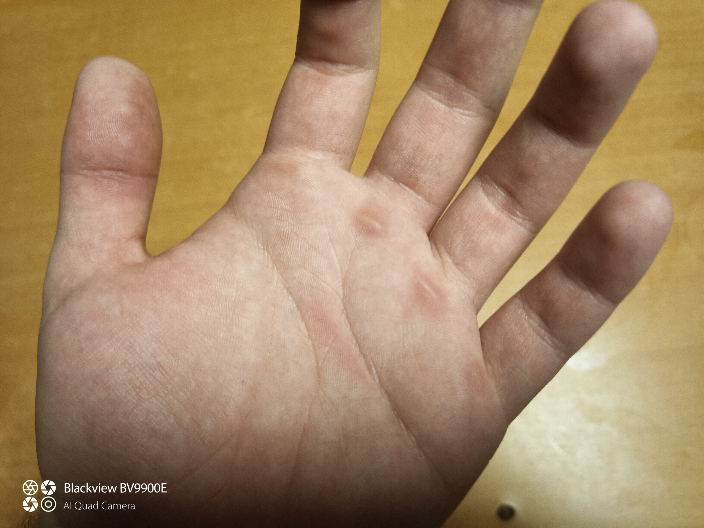
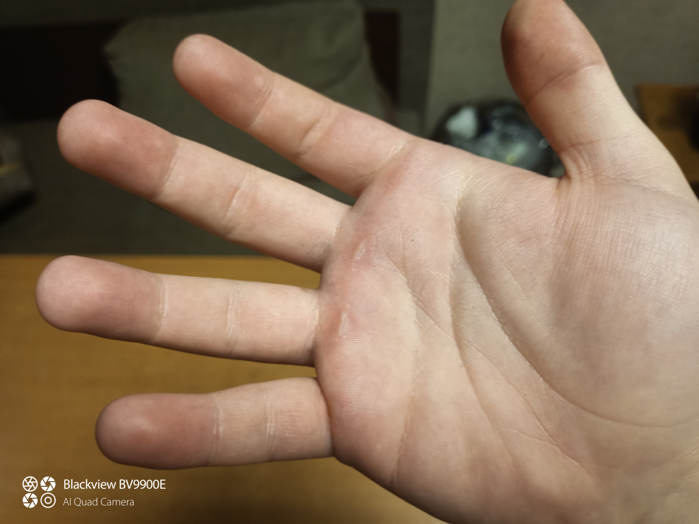
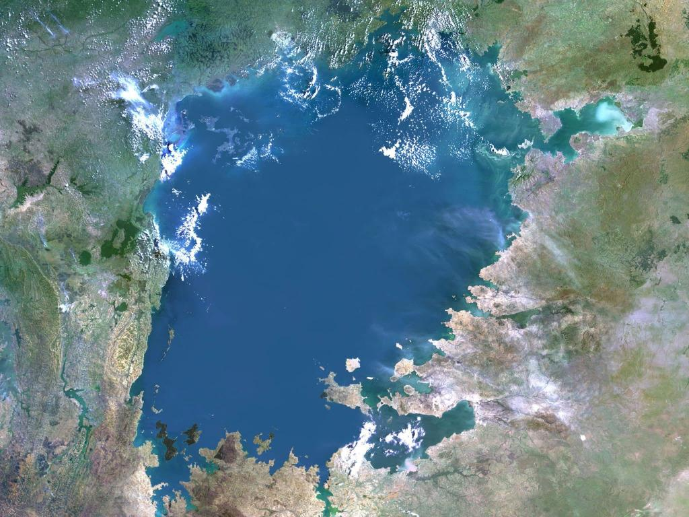
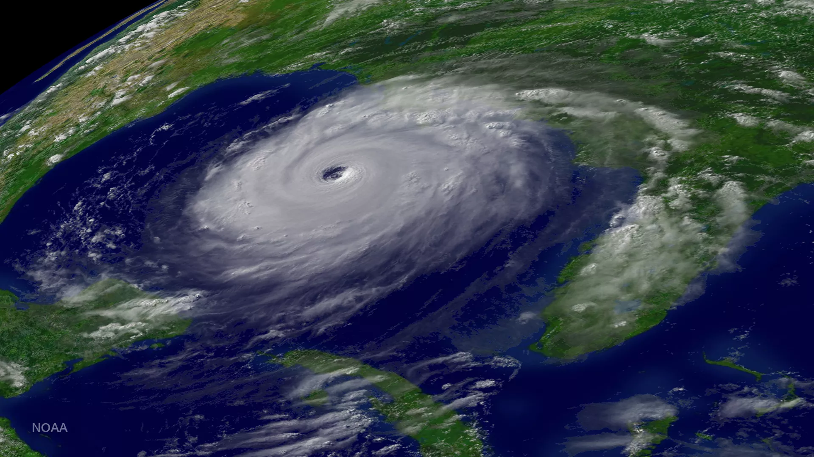
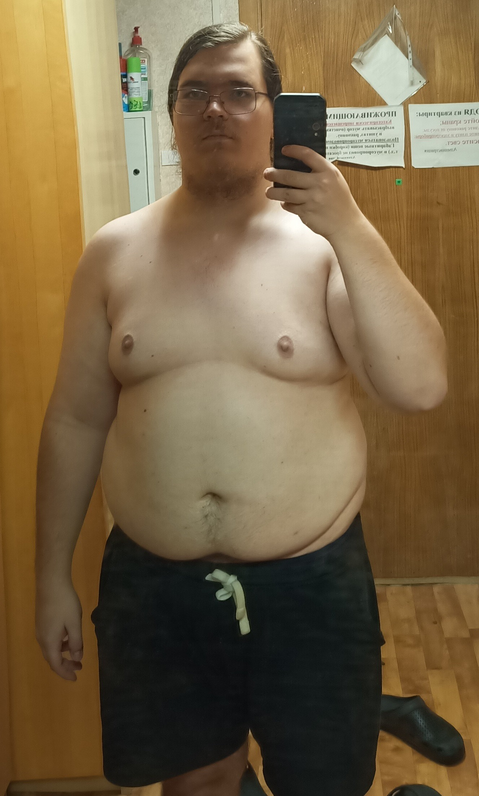
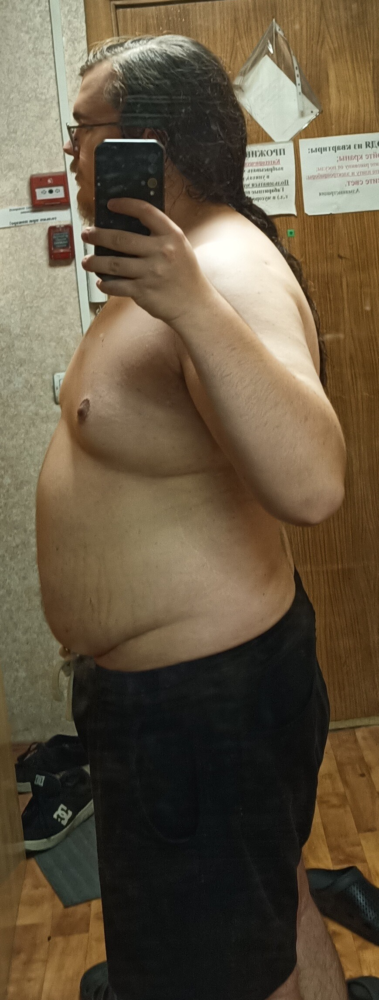
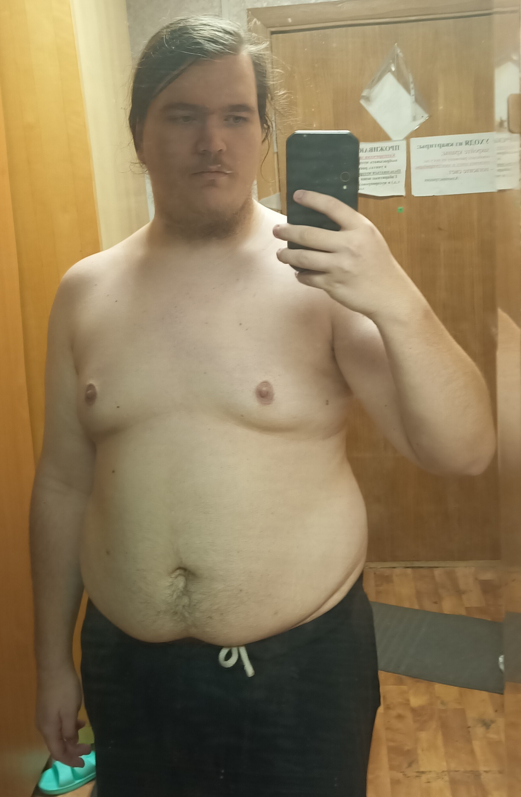
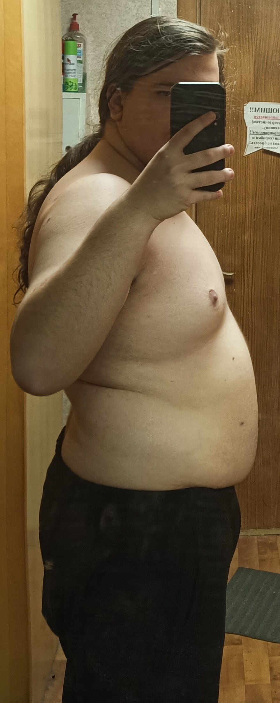
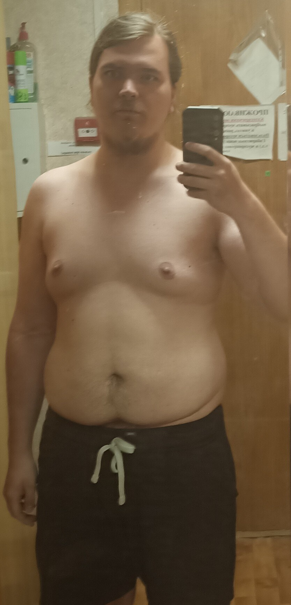
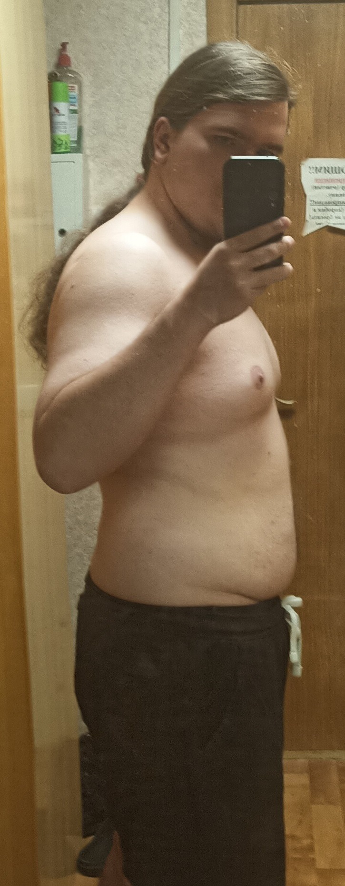

Это эссе выросло из моей зачётной работы по гуманитарной дисциплине "Философия и культура здорового образа жизни". Читать следует, если вам интересен мой опыт похудания с ~125 кг. до ~100 кг., быть может, это будет для вас поучительно или вдохновляюще.
Для контекста, описанные мною события происходили пока я учился на 4 - 5 курсах физтеха.
История начинается ещё осенью 2023-его года. Именно тогда, примерно в начале октября, мне пришла в голову идея после сессии (в конце января или в феврале) познакомить двух своих друзей, одного студенческого, другого - ещё школьного. Хорошие люди должны знать друг друга, я считаю. Ну и в качестве места для их знакомства и нашей общей посиделки я выбрал бар.
Мой студенческий друг, притом что при случае никогда не был против выпить, отказывался договариваться наперёд. Мол, пить плохо, может я за эти 3-4 месяца приду к тому, что перестану пить в принципе, заранее потому ничего обещать не буду. Но мне очень хотелось, чтобы мы в итоге пришли к договорённости, такой я человек, люблю делать их наперёд.
В результате мой друг рассудил так: он готов будет пообещать поехать со мной в бар и познакомится с моим другим, школьным, другом, но я взамен тогда должен буду пообещать, что сразу после этого мероприятия начну скидывать вес, и не остановлюсь, пока не достигну отметки в 100 кг (я на тот момент весил ~125 кг).
И я оказался достаточно глупым, чтобы согласиться на это.
Собственно, это самое мероприятие состоялось, вечер прошёл просто замечательно. Не знаю, общаются ли 2 моих друга промеж собой, но, как минимум, они знают о существовании друг друга, это уже хорошо.
Как и обещал, сразу после нашей посиделки, начиная с 7-ого февраля, я решил начать скидывать вес.
Тут стоит сразу сказать, намеревался я это делать без физических нагрузок. Основная причина: когда ты жирный, тебе не хочется лишний раз идти куда-то, в какой-то там зал, чтобы позаниматься. Даже если этот зал буквально в соседнем общежитии.
Я хотел скинуть вес исключительно через диету, конкретно через калорийную диету. Я начал следить за кол-вом потребляемых калорий, старался попадать по ним в окно 2 - 2,5 тысячи калорий в день. И в принципе, у меня это получалось... Первое время.
Спустя 2 недели соблюдения такой диеты я стал замечать за собой следующее:
В третью неделю я стал срываться, не мог совладать с собой, как результат, в третью неделю никакого ощутимого прогресса не было, скорее наоборот, регресс, что меня сильно раздосадовало.
В итоге, спустя 3 недели я бросил диету, чтобы спокойно доучится последний семестр бакалавриата, без лишнего беспокойства и нервотрёпки. Друг отнёсся к этому с пониманием, всё-таки он осознавал, что 3 недели на диете за один проведённый вечер в баре итак многовато. Однако, я же обещал, что дойду до 100 кг, дал слово, в том числе поэтому я эту затею не оставил.
Проанализировав предыдущую неудачу, я изменил свою стратегию.
Прежде всего, я исправил своё отношение к еде. Я привык переедать, потому странно ожидать, что организм мгновенно адаптируется к диете с недостатком калорий. Потому иногда я себе вполне мог позволить съесть чуть больше, чем надо.
Но зато у меня появилась она, та, с которой я оставался наедине на долгие часы, та, которая заставляла моё дыхание учащаться, а сердце - выпрыгивать из груди, та, которую вы можете лицезреть на картинке ниже.
Гиревой спорт, как мне видится, незаслуженно многими остаётся без внимания. Главное для меня преимущество этого направления: чтобы заниматься с гирей, нужна гиря и немного свободного пространства, всё. Никаких тренажёров, никаких залов! Бери гирю - и занимайся.
И притом с помощью гири можно нагрузить почти всё тело, условный рывок гири одной рукой напрягает единовременно и руку, и спину, и ноги.
Как ещё оказалось в будущем, привыкнув к гире, её становится относительно нетяжело переносить, в том числе чтобы позаниматься на улице. Гиревой воркаут на свежем воздухе - очень приятное времяпрепровождение.
Поначалу я занимался с гирей почти каждый день, но в какой-то момент стал чувствовать, что не восстанавливаюсь от раза к разу, плюс боялся, что сдеру мозоли.
Я делал комплекс из 10 упражнений, показанных в этом видео. Просто по одному подходу сколько получается.
Через где-то 2 недели перешёл к тренировке, описанной уже в этом видео. Сразу делать 10 стартовых повторений не выходило, начинал с 7, постепенно количество стартовых повторений увеличивал. Так в итоге за где-то 2 недели вышел на 10 стартовых повторений.
Со временем заниматься с одной пудовой гирей стало скучновато, слишком просто, потому я решил приобрести сначала полуторапудовую, а потом вторую пудовую, чтобы можно было делать упражнения сразу с двумя одинаковыми гирями.
На самом деле, чтобы не так сильно болели мозоли и чтобы не было страха их содрать, рекомендую заниматься в специальных спортивных перчатках. Заниматься с пудовой гирей без них ещё можно, но вот с гирями потяжелее будет уже очень неприятно.
|  |  |
У людей есть традиция давать женские имена разным огромным и грандиозным "объектам", будь то творения природы, вроде озера Виктории или урагана Катрины, или человека, вроде крейсера Авроры или сверхтяжёлого железнодорожного артиллерийского орудия Доры.
|  |  |
Но иногда люди дают женские имена и чему-то личному, предмету, с которым таким образом закрепляют эмоциональную, интимную связь. Например, военнослужащие иногда могут наречь свой автомат. Насколько мне известно, такие люди потом испытывают гораздо более сильный ПТСР, потому как не могут пережить расставание с "подругой", которая выручала в таком количестве сложных ситуаций, и которую они вот так взяли и "бросили".
Так вот, как-то само собой так получилось, что я начал обращаться к полуторапудовой гире Брумхильда.
Я даже не могу наверняка сказать, откуда я взял это имя, в поисковике мне по запросу выдавалась валькирия Брюнхильда из скандинавской мифологии, но вот только имя всё-таки немного отличается, плюс я сам о существовании такой валькирии не знал, пока не начал гуглить.
Но после гугления чуть более настойчиво, мне выдалась героиня фильма "Джанго освобождённый", вот она именно что Брумхильда, и этот фильм я когда-то смотрел.
Но, когда я обращался так к гире, я не вспоминал никакую чернокожую рабыню из фильма, нет.
Однако, других вариантов, откуда я мог знать это имя, у меня нет, поэтому, думаю, имя "Брумхильда" у меня отложилось после просмотра фильма на подкорке, звучит оно внушающе и грозно, что объясняет мой неосознанный выбор этого имени, оно очень даже подстать полуторапудовой гире.
Ну и чтобы близняшки, 2 пудовые гири, на меня не обижались, позже и они были наречены именами "Феня" и "Меня". Тут уже всё максимально просто, это адаптированные, чтобы мне было проще их произносить, имена двух сестёр-великанш из скандинавской мифологии.
Несмотря на то, что я решил не прям сильно ограничивать себя в еде, за счёт тренировок с гирями, мой вес пошёл вниз. И 5-ого мая 2025 года я порадовал того самого студенческого друга вернутым долгом.
Таким образом, за чуть больше чем 8 месяцев у меня получилось скинуть чуть больше 25 килограмм.
Могу продемонстрировать то, как я худел, ещё более наглядно.
|  |  |
|  |  |
|  |  |
На самом деле, как мне кажется, любой жирный должен задать сам себе вопрос, как он оказался в таком положении. Ответ на этот вопрос, скорее всего, автоматически даст и ответ на вопрос, как из этого положения выйти.
Проблема в том, что я не оказывался в таком положении. Я будто всегда был в нём. Я не помнил себя весящим 2-значное количество килограммов. И нет, это не потому что я не помню себя младшекурсником, абитуриентом или поздним школьником. Как раз таки помню, и не могу сказать, что я тогдашний часто взвешивался, но когда я это делал, весы всегда показывали 3-значные значения.
Поэтому, к несчастью, большую часть моей осознанной жизни для меня было нормальным быть жирным, просто потому что я был таким с самого начала этой осознанной жизни.
Наверное, это делает мой результат ещё большим достижением, что, конечно, прискорбно, учитывая то, что многие и без всяких достижений, по умолчанию, весят меньше центнера.
Напоследок хочу сказать, что даже одна посиделка в баре может стать причиной, по которой вы захотите жить более здоровой жизнью. Так что не бойтесь изредка зависать в барах, знакомиться с новыми людьми или знакомить людей друг с другом. Цитируя Парацельса: "Всё есть яд, и всё есть лекарство, важна лишь доза".